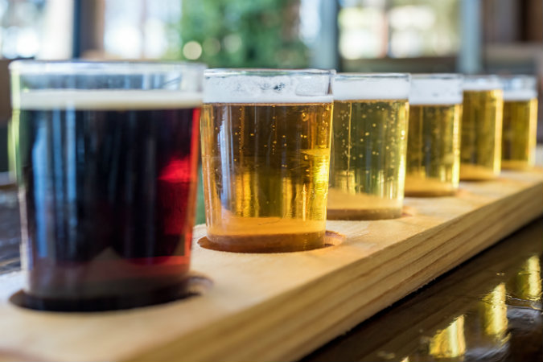
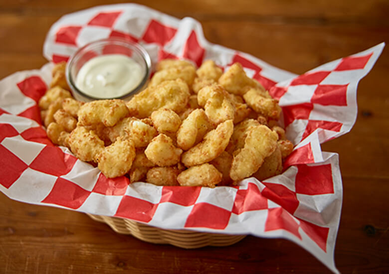
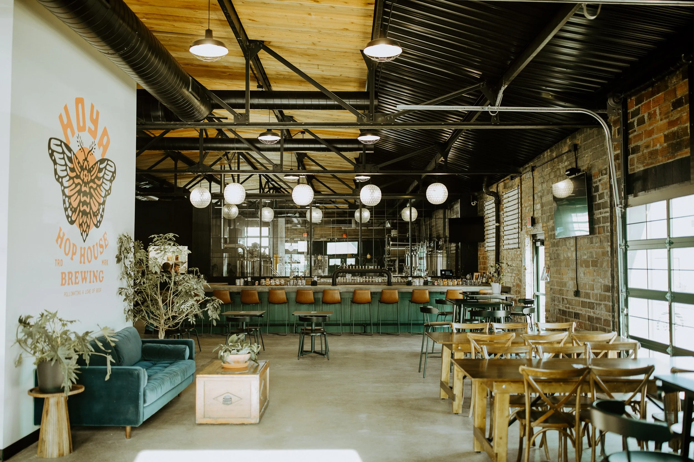
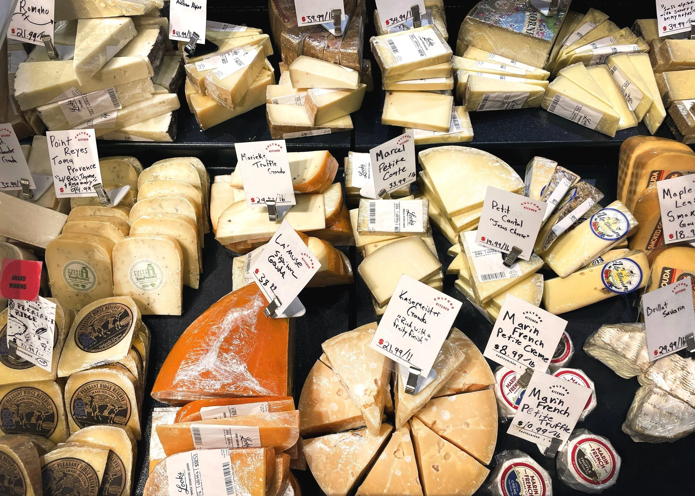

Gallery
Here is a collection of images showcasing some of the best highlights from the trail!
Trail Photos





Here is a collection of images showcasing some of the best highlights from the trail!



